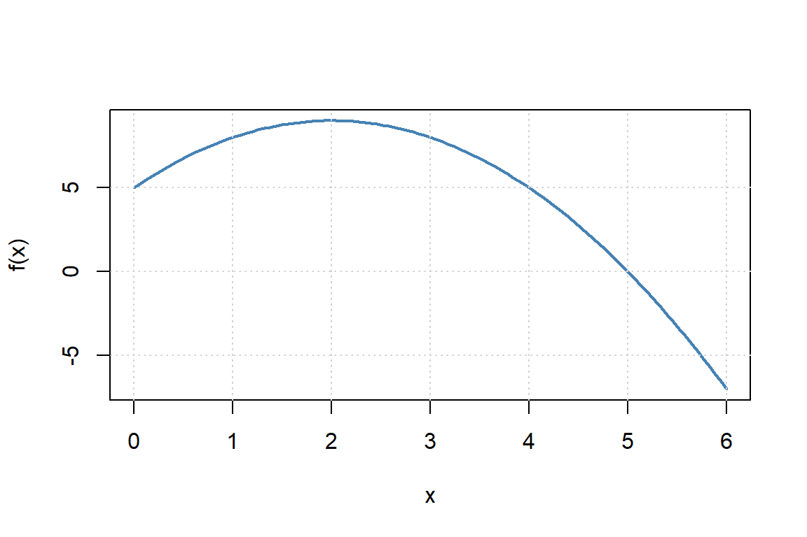
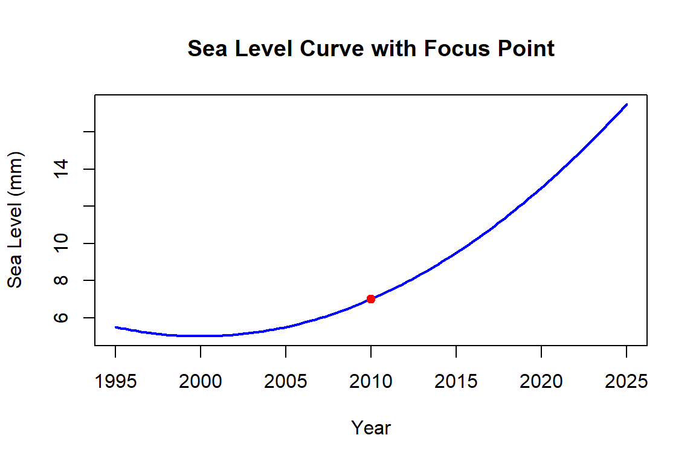
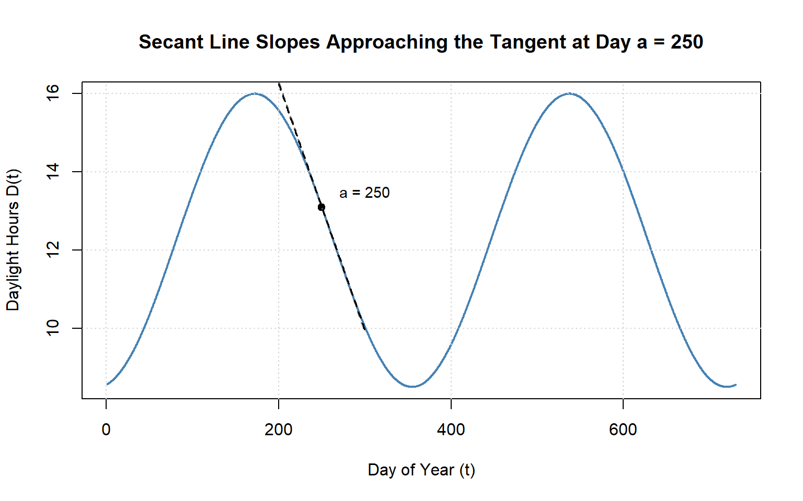
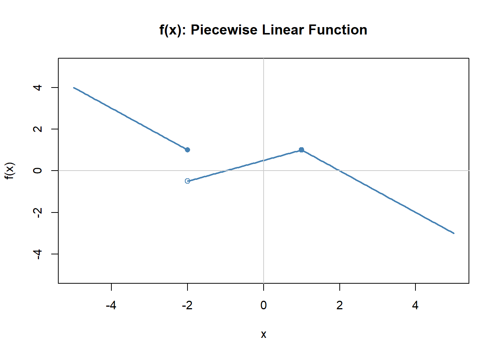
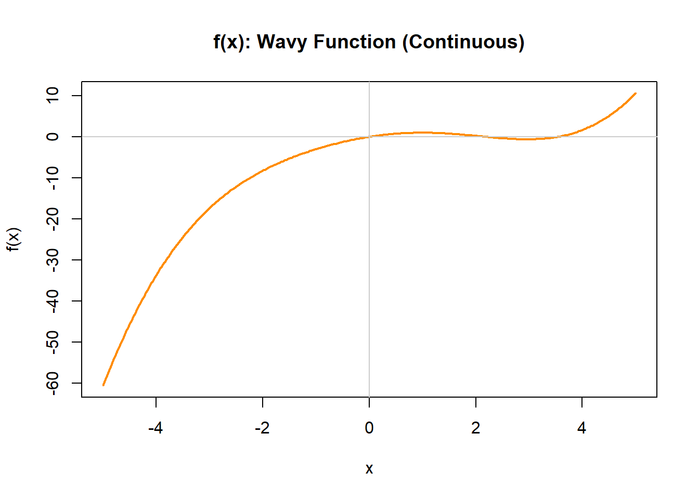
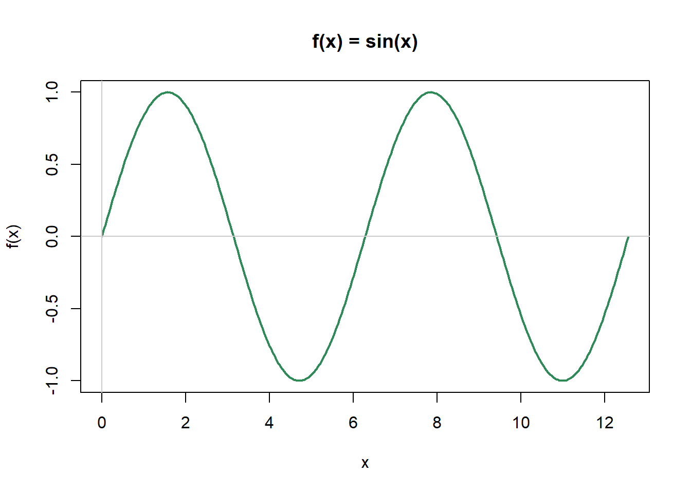

Chapter 9 Introduction to Derivatives — Workbook
9.1 Learning Objectives (Quick Self-Check)
Check your readiness:
For each objective, write one sentence in your own words or a question you still have:
- What is the difference between an average rate of change and an instantaneous rate of change?
- How can you interpret a derivative from a graph, dataset, or equation?
- What does derivative notation mean, and how does it connect to context?
- How could you apply derivatives to a real-world environmental example?
9.2 Understanding the Speed of Change
A derivative is about how fast something is changing, right now, and in what direction.
9.2.1 Class Brainstorm: What’s Changing?
Activity:
 Shared Google Doc
Shared Google Doc
As a group, pick an environmental system you are interested in (e.g. Lake Washington).
Discuss:
- What quantity is changing in that system?
- What is it changing with respect to (time, distance, depth, etc.)?
- Why might the speed of change matter for scientists, managers, or communities?
- Rinse and repeat, can you think of another quantity or variable that is changing in your system?
- What quantity is changing in that system?
Share your group’s example with the class.
Notes:
9.2.2 Average vs Right-Now: Build the Contrast
Practice:
Using your scenario:
- What average rate of change could you compute between two times?
- What would the instantaneous rate tell you “right now”?
- How would the decisions based on these two rates differ?
9.2.3 Graph Interpretation: Slope as a Story
Activity (no equations needed):
Sketch a simple curve of your quantity vs. its input (e.g., population vs. time).
- Mark one place slope is positive (increase).
- Mark one place slope is near zero (flat).
- Mark one place slope is negative (decrease).
- For each mark, write a one-sentence story of what’s happening.
- What does the steepness tell you about your quantity?
Notes:
9.3 Why We Need New Math Tools
9.3.1 Compare: Snapshots vs. Speed
Activity (Whole Class Scenario + Small Groups):
Scenario:
A coastal city is monitoring sea level rise to plan future flood defenses.
- Snapshot: “Sea level is currently 1.2 meters above the baseline.”
- Speed: “Sea level is rising at 4 mm per year.”
Step 1: Snapshot vs. Speed
- What can the snapshot alone tell the city planners?
- What critical information is missing if they only have the snapshot?
- How does the speed of change alter the urgency of decisions?
Step 2: Consequences of Missing Information
- If planners only use the snapshot, what mistakes could they make?
- If they only use the speed, what context would be missing?
- Why do they need both?
Step 3: Push Further
- How would decisions differ if the speed of rise is constant vs. accelerating?
- What additional data (short-term vs. long-term) would make predictions more reliable?
Step 4: Generalize
Complete this sentence as a group:
In environmental systems, a snapshot tells us ________, but the derivative tells us ________.
Notes:
9.4 What Is A Derivative?
You’ve probably seen derivatives before—even if you didn’t call them that. If you’ve ever looked at how fast something was growing, declining, or shifting in space or time, you’ve already been thinking about derivatives.
| Math…Physics…Data…Context | Environmental…Applied…Context |
|---|---|
| Rate of change | Growth rate |
| Slope of the tangent line | Decay rate |
| Instantaneous rate | Reaction rate |
| Velocity | Flux |
| Acceleration | Turnover rate |
| Gradient | Loss rate / Gain rate |
| Marginal change | Change per unit time |
| Slope at a point | Response rate |
| Rise over run | Uptake rate |
| Delta Y / Delta X | First difference |
Mathematically, the derivative describes the instantaneous rate of change—the slope of the tangent line to a curve at a given point.
9.4.1 Derivative Notation: Speaking the Language of Change
In calculus, there are several common notations used to represent the derivative—the instantaneous rate of change of a function. Understanding these notations is key to reading and writing mathematics fluently, especially when interpreting real-world problems in environmental science.
9.4.1.1 Common Derivative Notations
Let’s say we have a function, we could right this as:
\[ f(x) = something\ with\ x's \ in\ it \\ y= something\ with\ x's \ in\ it \]
We can then write the notation of the derivative with respect to \(x\) in several ways, all of which mean exactly the same thing:
| Notation | Spoken As | Description |
|---|---|---|
| \(f'(x)\) | “f prime of x” | Most compact form; often used in textbooks |
| \(\frac{dy}{dx}\) | “dee y over dee x” | Emphasizes that \(y\) is a function of \(x\); Leibniz notation |
| \(\frac{d}{dx} f(x)\) | “dee by dee x of f of x” | Shows that differentiation is an operation |
| \(D_x f(x)\) | “D sub x of f of x” | Operator form used in some texts |
| \(y'\) | “y prime” | Used when \(y = f(x)\), common in applied settings |
- Prime notation: e.g., \(f'(x)\), \(g'(t)\)
- Leibniz notation: e.g., \(\frac{dy}{dx}\), \(\frac{d}{dt}\)
- Operator notation: e.g., \(\frac{d}{dx}(f(x))\), applying \(\frac{d}{dt}\) to an expression
9.4.1.2 The Derivative as an Operator
The notation \(\frac{d}{dx}\) is not just a symbol—it’s an operator. That means it acts on a function to produce another function: the derivative.
Think of it this way:
The symbol \(\frac{d}{dx}\) is a command: “Take the derivative of whatever comes after this with respect to \(x\).”
So if you write:
\[ \frac{d}{dx} \left(3x^2 + 2x\right) \]
You are instructing the reader (or yourself!) to differentiate the expression \(3x^2 + 2x\) with respect to \(x\). The result:
\[ \frac{d}{dx} \left(3x^2 + 2x\right) = 6x + 2 \]
9.5 Average Rate of Change
The average rate of change tells us how much something changes per unit of input (like time, distance, or depth) over a chosen interval. Mathematically, it’s the slope of a secant line connecting two points on a function.
9.5.1 Practice: Secant Slope on a Graph
Activity (Individual or Pairs): Look at the quadratic function below.
\[f(x) = -x^2 + 4x + 5\]
Figure 9.1: Quadratic function used to explore average rate of change.
- Pick two points on the curve.
- Estimate their coordinates.
- Use the formula below to compute the average rate of change.
\[\frac{f(b) - f(a)}{b - a}\]
- What does the sign of your slope tell you about how the function is changing?
- Write a descriptive sentence about what your value represents
9.5.2 Practice: Environmental Table
Activity (Small Groups): The table below shows the amount of carbon stored in forest soil over time.
| Year | Carbon (kg/m²) |
|---|---|
| 2000 | 4.1 |
| 2005 | 4.8 |
| 2010 | 5.0 |
- Compute the average rate of change from 2000 to 2005.
- Compute the average rate of change from 2005 to 2010.
- Compute the average rate of change from 2000 to 2010.
- Write one or two sentences explaining what these numbers mean in the context of carbon storage.
9.5.3 Practice: Application to Sea Level
Activity (Whole Class Discussion): Suppose sea level in a coastal region is modeled by
\[S(t) = 3.2t + 45\]
where \(S(t)\) is in millimeters and \(t\) is years since 2000.
- Calculate the average rate of change of \(S(t)\) from 2010 to 2020.
- State the units of your result.
- Interpret the meaning: what does this tell us about sea level trends?
- Is there a shortcut to finding the average rate of change?
- Visualize this function with a sketch, add in the secant line, what do you notice?
Environmental Application - A Visual View

Discussion Questions
- Describe the Trend
- What does the plot tell you about how global sea level has changed since 1993?
- Is the trend linear, exponential, or something else?
- Estimate the Average Rate of Change
Pick two points on the black line (e.g., between 1993 and 2025) to estimate:
\[ \text{Average Rate} = \frac{\text{Change in Sea Level (mm)}}{\text{Change in Time (years)}} \]
What units does your answer have?
- Interpret in Context
- What does your calculated rate tell you about sea level rise?
- Why is knowing the average rate important for cities, communities, and planners?
- Explore Acceleration
Estimate the average rate of change over each 5-year interval below by reading approximate values from the graph.
Use the formula:
\[ \text{Avg. Rate} = \frac{\Delta \text{Sea Level}}{\Delta \text{Time}} \quad \text{(in mm/year)} \]
- Fill in the table:
| Time Interval | Sea Level at Start (mm) | Sea Level at End (mm) | Avg. Rate (mm/year) |
|---|---|---|---|
| 1995–2000 | |||
| 2000–2005 | |||
| 2005–2010 | |||
| 2010–2015 | |||
| 2015–2020 | |||
| 2020–2025 |
- What do you notice about how the average rate changes over time?
- What does that suggest about the acceleration of sea level rise?
- Connect to Derivatives
- If this were a smooth function \(S(t)\) representing sea level at year \(t\), what would the derivative \(S'(t)\) represent?
- What would a plot of the average rate of change look like?
- What would happen if we looked at the average rate of change over shorter and shorter periods? How would this chang the way a plot of the rate of change look like?
Reflection Prompt Describe a situation in your area of interest (marine biology, forestry, climate science, etc.) where an average rate of change is used. What does it tell you, and what might it leave out?
9.6 Instantaneous Rate of Change
The instantaneous rate of change tells us how fast something is changing at a specific moment. Unlike the average rate, which looks at an interval, the instantaneous rate captures the slope of the tangent line at a single point. This is the essence of a derivative.
9.6.1 Zooming In on Change
Activity (Whole Class Demonstration): Look at the function below.

Figure 9.2: Zooming in on a point to study local behavior of a curve.
- As a class, discuss: What does the slope of the curve at 2010 represent?
- Imagine drawing a tangent line right at that point. How is this different from a secant line?
- How might the meaning of this slope change if this were a glacier, a population, or a pollutant concentration?
9.6.2 Tangent Hunt
Activity (Pairs): On the curve below:
![Graph of a smooth curve over the interval from 0 to 10 showing an environmental quantity over time. Three points are highlighted on the curve. At one point, a dashed tangent line slopes upward, indicating a positive slope. At another point, the tangent line is horizontal, indicating zero slope. At a third point, the tangent line slopes downward, indicating a negative slope. The figure demonstrates how the sign of the derivative corresponds to increasing, constant, or decreasing behavior of the function.](environmental-precalculus_files/figure-html/slope-types-tangent-demo-1.png)
Figure 9.3: Identifying positive, zero, and negative tangent slopes on a curve.
- Mark one point where the tangent slope is clearly positive.
- Mark one point where the tangent slope is clearly negative.
- Mark one point where the tangent slope is zero.
- When does the sign of the tangent slope change?
- Where is change happening the fastest? (positive and negative)
Discuss: What does each slope mean in an environmental context (e.g., population peak, fastest growth, fastest decline)? Break up the function into regions and tell a story.
Notes:Challenge: Can you sketch the derivative - don’t worry about getting the right magnitudes, just the right shape. [Hint: start with some points you know for sure, then ask yourself as you move left to right what is happening to the slope]
![Two stacked panels show a function and a blank coordinate grid for its derivative. The top panel shows a smooth curve over the interval from 0 to 10 with three marked points. Dashed tangent lines at those points show one positive slope, one zero slope, and one negative slope, illustrating how the sign of the derivative depends on local behavior of the function. The bottom panel is a blank graph labeled f prime of x with horizontal and vertical reference lines, intended for sketching the derivative based on the slope information from the top panel.](environmental-precalculus_files/figure-html/tangent-slope-and-blank-derivative-1.png)
Figure 9.4: Using tangent slopes to sketch the derivative.
9.6.3 Practice: Bear Growth Scenario
Activity (Small Groups): Imagine tracking the weight of a bear throughout its life. Sketch or imagine the weight vs. age curve.
- Where is the slope (rate of change) steepest?
- Where does the slope flatten out?
- Could it ever become negative?
Group Discussion: Why might wildlife managers care about whether the rate of weight gain is accelerating or decelerating?
Notes:9.6.4 From a’s and b’s to a’s and h’s
Changing our frame of reference
\[ \frac{f(b)-f(a)}{b-a} = \frac{f(a+h)-f(a)}{h} \]
9.6.5 Data to Derivative
Activity (Hands-On, with Data Table): You measure dissolved oxygen in a lake for three consecutive days:
| Day | DO (mg/L) |
|---|---|
| 4.0 | 8.15 |
| 5.0 | 8.10 |
| 6.0 | 8.05 |
- Estimate the instantaneous rate of change at Day 4, 5 and 6 using the formula:
\[f'(a) \approx \frac{f(a+h) - f(a)}{h}\]
with \(h = 1\).
- Interpret your result in context, including units.
- Was it possible to calculate the instantaneous rate of change at day 6?
- How would a higher-resolution data set (more frequent measurements) improve your estimate?
Discuss: Is this more of an average or instantaneous rate of change?REMEMBER: We are just estimating here! If h is small enough its a good estimate, if h is big, well it becomes the ‘average’ rate of change.
9.6.6 Instantaneous vs. Average
Activity (Class Discussion): Compare these two statements:
- A glacier retreats 20 meters per year between 2000 and 2010.
- On January 1st 2005, the glacier front is moving backward at 3.5 meters per year.
- Which is an average rate? Which is instantaneous?
- What added information do you get (or can deduce) when you have both pieces of information?
- Why does the distinction matter for scientists, policymakers, or communities?
- Brainstorm 2–3 other examples where average vs. instantaneous rates tell very different stories.
9.7 The Limit Definition of a Derivative
We don’t do many proofs in this class, but understanding the mathematical origins of the derivative really helps with interpretation. So we will work through this one together.
9.7.1 Deriving the Limit Definition with a Real Example — Seattle Daylight
We’ll use a simple model of daylight hours in Seattle (approx. 47.6°N) to build the derivative from limits. A realistic sinusoidal model for daylight hours \(D(t)\) (in hours) on day \(t\) of the year is:
\[ D(t) \;=\; 12.25 \;+\; 3.75 \,\cos\!\Big(\tfrac{2\pi}{365}\,(t - 172)\Big) \]
- Midline \(\approx 12.25\) hours
- Amplitude \(\approx 3.75\) hours
Let’s first build an intuition for what daylight hours look like over a year in Seattle.
Sketch what you think the curve looks like (peak near late June, minimum near late December), then compare to the model above. Annotate interesting points along this function.
9.7.2 Connect to the Question
Activity (Think-Pair-Share): Lets pick a specific day \(a=250\) (day 250 ≈ early Sep).
What does \(D(a)\) represent in words?
If you only know \(D(a)\) and \(D(a+h)\), how would you estimate “how fast daylight is changing around day \(a\)” using the average rate of change?
Why might we want the instantaneous rate of change instead?
9.7.3 From Average to Instant: The Difference Quotient
Step 1 — Average Rate on \([a, a+h]\): Write the average rate of change of daylight hours between day \(a\) and day \(a+h\) where \(h=10\):
| Day of Year | Daylight Hours (hrs) |
|---|---|
| 250 | 13.26 |
| 260 | 12.61 |
| 270 | 11.96 |
\[ \frac{D(a+h) - D(a)}{h} \]
- What does the numerator represent in context?
- What are the units of this average rate?
Step 2 — Shrink the Interval: To get the rate “right now” on day \(a\), we take the limit as \(h \to 0\):
\[ D'(a) \;=\; \lim_{h \to 0} \frac{D(a+h) - D(a)}{h} \]
So if we use the data below we can see we are shrinking our \(h\) getting it close to \(0\).
| Day of Year | Daylight Hours (hrs) |
|---|---|
| 250 | 13.259 |
| 251 | 13.195 |
| 252 | 13.131 |
Calculate the average rate of change with an \(h=1\)
What if we shrink the interval even further and make \(h=0.01\)
| Day of Year | Daylight Hours (hrs) |
|---|---|
| 250.00 | 13.259240 |
| 250.01 | 13.258602 |
| 250.02 | 13.257965 |
- Why can’t we just set \(h=0\) directly?
- In words, what does this limit do with the two-day comparison?
Challenge: In your groups discuss this table, what do you notice on both ends of the table?
| h | Average Rate of Change (hrs/day) |
|---|---|
| 365 | 0.000000 |
| 300 | 0.009487 |
| 200 | -0.002907 |
| 100 | -0.046478 |
| 50 | -0.062121 |
| 10 | -0.064676 |
| 1 | -0.063844 |
| 0.1 | -0.063732 |
| 0.01 | -0.063721 |
| 0.001 | -0.063720 |
| 0.00001 | -0.063720 |
Technically what have found here is an estimate for the instantaneous rate of change at a point
9.7.4 Visualizing Secant \(\to\) Tangent (Seattle Daylight)
Using the plot below, sketch:
- The secant at day 250 with \(h=365\)
- Now draw another secant with \(h=300\)
- Now draw it with \(h=50\)
- Finally sketch the tangent at \(h=250\)
Remember the average rate of change equation is just rise over run or the slope of the secant lines, so the slopes of the lines are what tell us the rate of change

Figure 9.5: Secant lines approaching a tangent line for a daylight model.
9.8 Introducing Limit Notation
We now need a way to formalize what happens as we “zoom in” on a function — this is where the idea of a limit comes in.
9.8.1 Building Intuition
Activity (Think-Pair-Share):
Imagine a pollutant concentration in a river, \(C(x)\), as you move downstream toward a factory outfall.
- At 0.9 km downstream, \(C = 4.9\) mg/L
- At 0.99 km, \(C = 4.99\) mg/L
- At 0.999 km, \(C = 4.999\) mg/L
As you move closer to 1 km, what value does the concentration seem to be approaching?
This “approaching behavior” is what we call the limit.
Notes:9.8.2 Symbol and Words
Practice:
The formal symbol is:
\[
\lim_{x \to a} f(x)
\]
- What does the arrow (\(\to\)) mean?
- What does the \(a\) represent?
- What is \(f(x)\) approaching as \(x\) gets closer to \(a\)?
9.9 From Average to Instantaneous: The Role of Limits
We want to connect the average rate of change to the instantaneous rate of change.
Start with the average rate formula:
\[ \text{Average Rate on } [a,b] = \frac{f(b) - f(a)}{b-a} \]
9.9.1 Scaffold the Derivation
Practice (Step by Step):
- Start with the formula for the average rate of change between two points \(a\) and \(b\):
\[ \frac{f(b) - f(a)}{b-a} \]- What does the numerator mean?
- What does the denominator mean?
- What does the numerator mean?
- Introduce a new variable \(h = b-a\).
- Rewrite the denominator in terms of \(h\).
- Replace \(b\) with \(a+h\).
- Rewrite the denominator in terms of \(h\).
- Show that the formula becomes:
\[ \frac{f(a+h) - f(a)}{h} \]- Why is this still the average rate of change, just written differently? Try to explain this with a sketch.
- Now imagine shrinking the interval smaller and smaller: let \(h \to 0\). This makes the slope of secant line approach the slope of the tangent line.
- What problem happens if you just set \(h=0\)?
- How does the limit fix this?
- Add in the limit notation
- What problem happens if you just set \(h=0\)?
- Arrive at the definition of the derivative:
\[ f'(a) = \lim_{h \to 0} \frac{f(a+h) - f(a)}{h} \]
9.10 Finding the Derivative Using the Limit Definition of a Derivative
We’ll now practice moving from the definition of the derivative to actually computing one.
Remember, the derivative at a point \(a\) is defined as:
\[ f'(a) = \lim_{h \to 0} \frac{f(a+h) - f(a)}{h} \]
We are going to take this one step at a time:
9.10.1 Step 1: Setup the equations
Activity:
Suppose we have the function:
\[ f(x) = x^2 \]
We want to find the derivative at \(x = 2\).
- Write down the limit definition of the derivative at \(a = 2\).
- Substitute \(a = 2\) into the formula (but don’t simplify yet).
- What expression do you now have?
9.10.2 Step 2: Expand the Numerator
Activity:
The numerator is:
\[ f(2+h) - f(2) \]
- Compute \(f(2+h)\).
- Compute \(f(2)\).
- Subtract them to simplify the numerator.
- Write your result in expanded form.
9.10.3 Step 3: Simplify the Difference Quotient
Activity:
Now substitute your numerator back into:
\[ \frac{f(2+h) - f(2)}{h} \]
- Factor/simplify if possible.
- What cancels out?
- Why is this helpful?
9.10.4 Step 4: Take the Limit
Activity:
Finally, take the limit as \(h \to 0\).
- Substitute \(h = 0\) after simplification.
- What value do you get for \(f'(2)\)?
- Interpret: What does this mean in terms of the slope of the tangent line?
You’ve found the derivative at a point \(a=2\)
9.10.5 Step 5: Generalize
Activity:
Repeat the same process, but this time use \(x\) instead of a fixed number like 2.
- Start with:
\[ f'(x) = \lim_{h \to 0} \frac{f(x+h) - f(x)}{h} \]
- Expand \(f(x+h)\) and subtract \(f(x)\).
- Simplify and take the limit.
- What is the general derivative function of \(f(x) = x^2\)?
You’ve now found the derivative function
9.11 Workbook: More Practice with the Limit Definition
Now let’s apply the same step-by-step process to two new functions.
Work carefully through each scaffold — the algebra will get trickier, but the structure is the same.
9.11.1 Example 1: \(f(x) = x^3\)
We’ll find the derivative of \(f(x) = x^3\) at a point, and then generalize.
9.11.1.1 Step 1: Write the Definition
Activity:
Start with the limit definition:
\[ f'(a) = \lim_{h \to 0} \frac{f(a+h) - f(a)}{h} \]
- Substitute \(f(x) = x^3\).
- Don’t expand yet, just write down the expression.
9.11.1.2 Step 2: Expand
Activity:
- Expand \((a+h)^3\).
- Subtract \(a^3\).
- Simplify your numerator.
9.11.2 Step 5: Generalize
Activity:
Repeat the same process, but this time use \(x\) instead of a fixed number \(a\).
9.11.3 Example 2: \(f(x) = 3x^2 + 7x\)
This time, the function is a polynomial. Let’s find its derivative using the limit definition.
9.11.3.1 Step 1: Write the Definition
Activity:
- Start with:
\[ f'(a) = \lim_{h \to 0} \frac{f(a+h) - f(a)}{h} \]
- Substitute \(f(x) = 3x^2 + 7x\).
9.11.3.2 Step 2: Expand
Activity:
- Expand \(3(a+h)^2 + 7(a+h)\).
- Subtract \((3a^2 + 7a)\).
- Simplify your numerator.
9.11.4 Step 5: Generalize
Activity:
Repeat the same process, but this time use \(x\) instead of a fixed number \(a\).
What is the derivative function?
Notes:9.11.5 Example 3: Environmental Application — Glacier Retreat
Suppose the area of a glacier (in km\(^2\)) is modeled by:
\[ G(t) = 100 - 2t - 0.1t^2 \]
where \(t\) is years since 2000.
We want to compute the instantaneous rate of change of glacier area at \(t = 10\).
Practice (Small Groups):
1. Write the limit definition for \(G'(10)\).
2. Compute \(G(10+h)\).
3. Subtract \(G(10)\).
4. Divide by \(h\).
5. Simplify.
6. Take the limit as \(h \to 0\).
Discussion:
- What does the sign of \(G'(10)\) tell you about the glacier at that time?
- How would you explain your result to a policymaker?
Practice
Given \(f(x)=7x\)
Find an expression for the derivative function \(f'(x)\), using the limit definition of the derivative.Practice
Given \(f(x)=3x^2+6x+2\)
Find an expression for the derivative function \(f'(x)\), using the limit definition of the derivative.Practice
Given \(f(x)=27\)
Find an expression for the derivative function \(f'(x)\), using the limit definition of the derivative.Hard problem (because of the algebra)
Given \(f(x)=\frac{1}{x}\)
Find an expression for the derivative function \(f'(x)\), using the limit definition of the derivative.Estimate vs Calculate
Given \(f(x)=e^x\)
Estimate, using the limit definition of the derivative, \(f'(1)\).9.12 Workbook: When Does a Derivative Exist?
9.12.1 Exploring Differentiability, Continuity, and Smoothness
Before we use derivatives, we need to know when they exist.
In other words, under what conditions is a function differentiable at a point?
9.12.2 Requirements for Differentiability
At a point \(x = a\), a function \(f\) is differentiable if its instantaneous rate of change (the derivative) exists and is finite.
Formally: \[ f'(a) = \lim_{h \to 0} \frac{f(a + h) - f(a)}{h} \] exists and is a real number.
For that limit to exist, three conditions must hold:
| Requirement | Meaning | What Can Go Wrong |
|---|---|---|
| 1. Function is defined | \(f(a)\) exists | Hole, asymptote |
| 2. Function is continuous | \(\lim_{x \to a} f(x) = f(a)\) | Jump or removable discontinuity |
| 3. Slope changes smoothly | The left- and right-hand difference quotients approach the same finite value | Corner, cusp, vertical tangent, oscillation |
A function is differentiable if it is defined, continuous, and smooth (no sharp turns or infinite slopes).
Prompt 1: Definition and Meaning
In your own words, what does it mean for a function to be differentiable?
How is this related to the idea of a function being continuous and smooth?
9.12.3 Continuity: The Foundation for Differentiability
A function \(f(x)\) is continuous at a point \(x = a\) if all three of the following conditions are satisfied:
1. The function is defined at \(a\) \[ f(a) \text{ exists.} \]
→ In practice: Check that there’s a real number assigned to \(f(a)\); the point is not a hole, asymptote, or gap.
Prompt 2:
Sketch or describe an example of a function that is not defined at a point.
What happens to continuity there?
2. The limit exists as \(x \to a\) \[ \lim_{x \to a} f(x) \text{ exists.} \]
→ In practice: Approach \(a\) from both the left and right.
If the left-hand and right-hand limits agree and are finite, the limit exists.
Prompt 3:
Give an example where the left-hand and right-hand limits are different.
How does this affect continuity?
3. The limit equals the function value \[ \lim_{x \to a} f(x) = f(a) \]
→ In practice: Compare the numerical (or graphical) limit you found with the actual value of \(f(a)\).
If they match, the function is continuous at that point.
Task A — Classify each panel (1–9):
For each graph, decide whether the function is continuous within the region shown on the graph.
If it is not continuous, label the failure type:
- Removable (hole / mismatched value)
- Jump
- Infinite (vertical asymptote)
- Oscillation (no limiting value)
Task B — Multiple issues:
Some panels show more than one issue in the same figure.
List all points of discontinuity and classify each one.
Task C — Continuous examples:
Which panels are continuous as shown on their intervals?
Explain briefly why.
Suggested table (copy and fill):
| Panel | Continuous? | Discontinuity points | Type(s) | One-sentence reason |
|---|---|---|---|---|
| 1 | ||||
| 2 | ||||
| 3 | ||||
| 4 | ||||
| 5 | ||||
| 6 | ||||
| 7 | ||||
| 8 | ||||
| 9 |
Extension: For any discontinuity you labeled removable, propose a value for \(f(a)\) that would make the function continuous at that point, and justify it.
![Nine-panel figure illustrating continuity and discontinuity. Panel 1 shows a smooth parabola that is continuous everywhere. Panel 2 shows an absolute value graph with a corner but no break, so it is continuous. Panel 3 shows a removable discontinuity, with an open circle at one point on the curve and a filled point at a different height for the same x-value. Panel 4 shows a jump discontinuity, where the left and right sides approach different values. Panel 5 shows an infinite discontinuity for the function one over x, with a vertical asymptote at x equals 0. Panel 6 shows oscillation near x equals 0 for sine of 1 over x, where the function keeps oscillating and does not settle to a limit. Panel 7 shows a repaired hole, where the missing point has been filled so the graph is continuous. Panel 8 shows a jump discontinuity together with a mismatched defined value at the jump point. Panel 9 shows both a removable discontinuity at one x-value and a vertical asymptote at another. The figure compares different ways a function can be continuous or fail to be continuous.](environmental-precalculus_files/figure-html/continuity-3x3-1.png)
Figure 9.6: Examples of continuous functions and different types of discontinuities.
Summary:
A function is continuous at \(x=a\) if:
1. \(f(a)\) exists,
2. \(\lim_{x\to a} f(x)\) exists, and
3. \(\lim_{x\to a} f(x) = f(a)\).
9.13 Smoothness: When Is a Function “Nice Enough” to Differentiate?
Continuity alone is not enough for differentiability.
A function can be continuous but still have sharp corners, cusps, or vertical tangents where the slope suddenly changes or becomes infinite.
To take a derivative, the function must also be smooth — meaning its slope changes gradually.
9.13.1 What “Smoothness” Means
A function \(f(x)\) is smooth at a point \(x = a\) if:
- It is continuous at \(a\).
- Its derivative exists and is finite at \(a\).
- The slope changes continuously (no sudden jumps or sharp turns).
Prompt 5:
What visual features in a graph help you decide whether a function is “smooth”?
List or sketch examples of what fails to be smooth.
9.13.2 How to Test for Smoothness
To check whether a function is smooth at \(x = a\):
Confirm continuity:
\[ \lim_{x \to a} f(x) = f(a) \] → The graph is unbroken at \(a\).Check the slopes from both sides:
\[ \lim_{h \to 0^-}\frac{f(a+h)-f(a)}{h} \quad \text{and} \quad \lim_{h \to 0^+}\frac{f(a+h)-f(a)}{h} \] → If both limits exist, are finite, and equal each other, the function is smooth at that point.Look for visual cues:
- A corner or cusp means slopes differ → not smooth.
- A vertical tangent means infinite slope → not smooth.
- A continuous curve with gentle slope change → smooth.
- A corner or cusp means slopes differ → not smooth.
Prompt 6:
Identify which of the following functions are smooth at \(x=0\):
Explain your reasoning.
![Four-panel figure comparing functions with different local behaviors at x equals 0. Panel A shows the parabola x squared, which is smooth and differentiable at the origin. Panel B shows the absolute value function, which has a sharp corner at the origin and is not differentiable there. Panel C shows the cube root function, which passes through the origin with a vertical tangent and is not differentiable there. Panel D shows the function x times sine of 1 over x with f of 0 defined as 0; the graph is continuous at the origin but oscillates rapidly nearby, illustrating complicated local behavior. In each panel, the point at x equals 0 is highlighted to compare how continuity does not always imply smoothness.](environmental-precalculus_files/figure-html/smoothness-4panels-1.png)
Figure 9.7: Examples showing different kinds of smoothness and non-smooth behavior.
9.13.3 Why Smoothness Matters
Smoothness tells us that the system changes gradually, without abrupt shifts.
In environmental modeling, this matters because:
- Temperature, population, or nutrient levels that change smoothly can be modeled with differential equations.
- Processes with jumps or discontinuities (like dam releases or landslides) require piecewise or non-differentiable models.
9.13.4 Examples
| Function | Smooth? | Why |
|---|---|---|
| \(f(x) = x^2\) | ✅ Yes | Continuous and derivative exists everywhere |
| \(f(x) = |x|\) | ❌ No | Corner at \(x=0\) — left and right slopes differ |
| \(f(x) = \sqrt[3]{x}\) | ❌ No | Vertical tangent at \(x=0\) (infinite slope) |
| \(f(x) = x\sin(1/x)\) (define \(f(0)=0\)) | ❌ No | Oscillating slope near \(x=0\) |
| \(f(x) = e^{-x^2}\) | ✅ Yes | Infinitely smooth everywhere |
9.14 Testing for Differentiability
To test whether \(f\) is differentiable at \(x=a\):
Check definition: Make sure \(f(a)\) exists.
→ If not, derivative automatically fails.Check continuity:
\[ \lim_{x \to a} f(x) = f(a) \] → If there’s a jump or hole, \(f'(a)\) cannot exist.Compare slopes from both sides:
\[ \lim_{h \to 0^-}\frac{f(a+h)-f(a)}{h} \quad \text{and} \quad \lim_{h \to 0^+}\frac{f(a+h)-f(a)}{h} \] → If they’re equal and finite, \(f'(a)\) exists.
→ If they differ or blow up, \(f'(a)\) does not exist.
Key relationship:
If \(f\) is differentiable at \(a\), then \(f\) is continuous at \(a\).
However, the converse is not always true —
\(\text{continuous} \not\Rightarrow \text{differentiable}.\)
Prompt 7:
Sketch or describe a function that is continuous but not differentiable.
What feature prevents the derivative from existing?
9.15 Common Ways Differentiability Fails
| Type of Failure | Description | Example |
|---|---|---|
| Discontinuity | Jump or hole at the point | Step in dam outlet temperature |
| Corner or cusp | Left and right slopes differ | \(f(x) = |x|\) at \(x=0\) |
| Vertical tangent | Slope tends to \(\pm\infty\) | \(f(x) = (x)^{1/3}\) at \(x=0\) |
| Oscillating slope | No single limiting slope | \(f(x) = x \sin(1/x)\) at \(x=0\) |
Checking Differentiability at \(x=0\)
In each panel below, decide whether the function is differentiable at \(x=0\).
Use the following criteria to test:
1. Is the function defined at \(x=0\)?
2. Is the function continuous at \(x=0\)?
3. Do the left-hand and right-hand slopes (derivatives) agree and are they finite?
| Panel | Function | Defined at \(x=0\)? | Continuous at \(x=0\)? | Left & Right Slopes Equal & Finite? | Differentiable? |
|---|---|---|---|---|---|
| 1 | \(f(x)=e^{-x^2}\) | ||||
| 2 | \(f(x)=\sqrt{|x|}\) | ||||
| 3 | \(f(x)=x+|x|\) | ||||
| 4 | \(f(x)=\sin(x^2)\) |
![Four-panel figure comparing functions at x equals 0. Panel 1 shows the function e to the negative x squared, which is smooth and differentiable at x equals 0. Panel 2 shows the function square root of the absolute value of x, which has a sharp vertical cusp at x equals 0 and is not differentiable there. Panel 3 shows the function x plus the absolute value of x, which has a corner at x equals 0 and is not differentiable there. Panel 4 shows the function sine of x squared, which is smooth and differentiable at x equals 0. In each panel, the point at x equals 0 is highlighted to compare how some continuous functions are differentiable while others are not.](environmental-precalculus_files/figure-html/differentiability-new-4panels-1.png)
Figure 9.8: Examples of differentiable and non-differentiable behavior at a point.
9.16 Environmental Examples
| Scenario | What’s Happening | Differentiability Outcome |
|---|---|---|
| Dam outlet temperature step | Sudden jump between upstream and downstream water | Derivative does not exist (discontinuous) |
| Piecewise linear rating curve | Continuous but with a sharp corner | Derivative does not exist at the corner |
| Sharp flood peak | Slope becomes extremely steep | Derivative may tend to \(\infty\), so does not exist |
| Smooth glacier retreat curve | Continuous and smooth change in slope | Differentiable |
9.17 Activity: From Function to Derivative Graphs
In each question below, you are shown a graph of a function \(f(x)\).
On the blank axes provided, sketch the derivative \(f'(x)\).
Focus on identifying:
- where the slope is positive, negative, or zero,
- relative steepness (large vs. small magnitude),
- points of non-differentiability or smooth transitions.

Figure 9.9: Piecewise linear function with discontinuities at junctions.

Figure 9.10: Smooth continuous function with changing slope and curvature.

Figure 9.11: Sine function over multiple periods showing periodic behavior.
![Graph of a piecewise function from negative 4 to 4 composed of three types of behavior. A decreasing line segment ends at x equals negative 2 with a closed point, while a horizontal segment begins there with an open circle, indicating a jump discontinuity. At x equals 0, the constant segment ends with a closed point and a quadratic curve begins with an open circle, showing another discontinuity. At x equals 2, the quadratic curve transitions smoothly into an increasing line with a shared closed point, indicating continuity and matching slope at that junction.](environmental-precalculus_files/figure-html/mixed-function-smooth-transition-1.png)
Figure 9.12: Piecewise function showing both discontinuities and a smooth transition.
![Graph of a piecewise function over the interval from negative 4 to 4 with three curved sections. The left section is a downward-opening quadratic that ends at x equals negative 1 with a closed point. The middle section is a smooth oscillating curve that begins at x equals negative 1 with an open circle and ends at x equals 1.5 with a closed point. The right section is a cubic curve that begins at x equals 1.5 with an open circle. Open and closed circles indicate jump discontinuities at the transition points.](environmental-precalculus_files/figure-html/complex-smooth-piecewise-1.png)
Figure 9.13: Piecewise function combining multiple smooth curve types with discontinuities at transitions.
Recipe of Plotting Derivatives
- What are we actually plotting?
- What are the key steps?
- What are the checks?
More Limit Definition Practice
Given the quadratic equation:
\(f(x) = 3x^2 + x\).
- Find the derivative function using the limit definition of the derivative
- What is the derivative at x=0, \(f'x(0)\)?
- What does the mean graphically?
- Can you find the equation for the tangent line at x=0?
These equations might help with thinking about the equation of the tangent.
\[
y - f(a) = f'(a)\,(x - a)
\]
\[
y = mx+b
\]
Testing a Limit
Consider the function:
\[ f(x) = \frac{x^2 + 1}{x - 1} \]
Find the limit of \(f(x)\) as \(x \to 2\).
\[ \lim_{x \to 2} \frac{x^2 + 1}{x - 1} \]Find the limit of \(f(x)\) as \(x \to 1\).
\[ \lim_{x \to 1} \frac{x^2 + 1}{x - 1} \]Is this function differentiable everywhere?
Environmental Application: Stream Temperature at a Dam
A dam releases cold water from deep in the reservoir. The stream temperature downstream is modeled by:
\[T(x) = 8 + 4\left(1 - e^{-0.1x}\right)\]
where \(x\) is the distance downstream in km and \(T\) is temperature in °C.
- What is the water temperature right at the dam (\(x = 0\))?
- What happens to the temperature as you go far downstream (\(x \to \infty\))?
- Use the limit definition (or your intuition) to describe: is the temperature changing faster near the dam or far downstream? How do you know?
- Sketch what the derivative \(T'(x)\) might look like. Is it positive or negative? Increasing or decreasing?
- At what distance downstream would you expect the temperature to be changing most rapidly? What ecological implication does this have for fish and aquatic organisms?